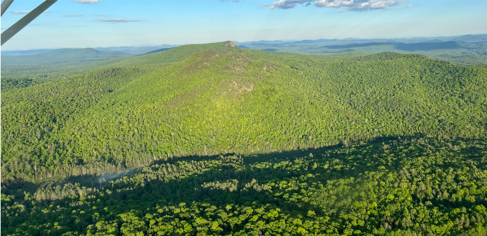
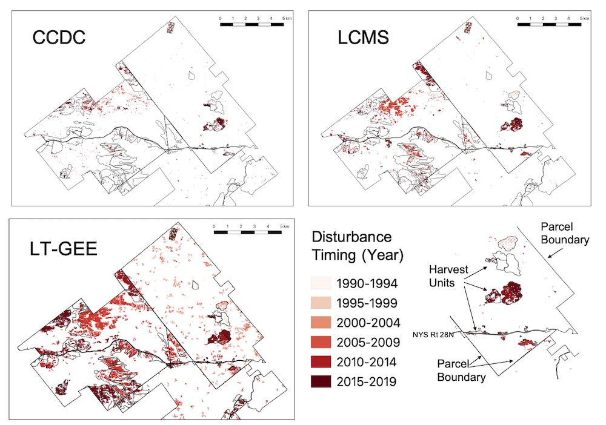
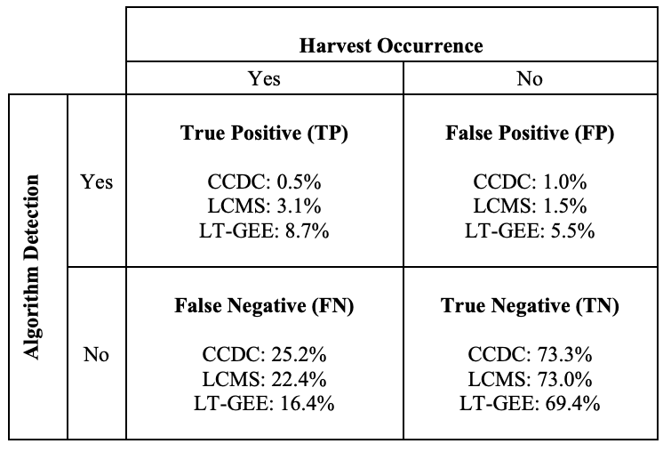
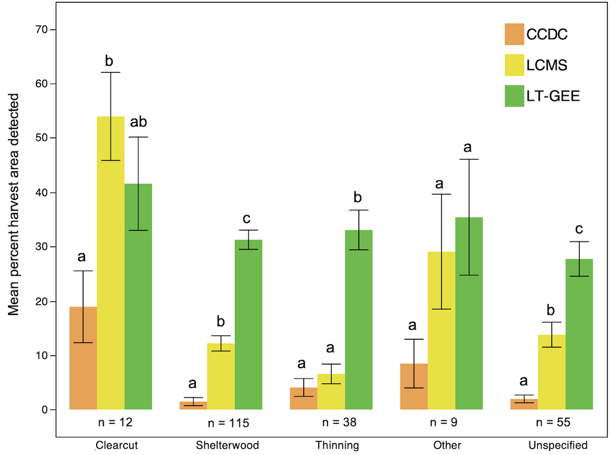
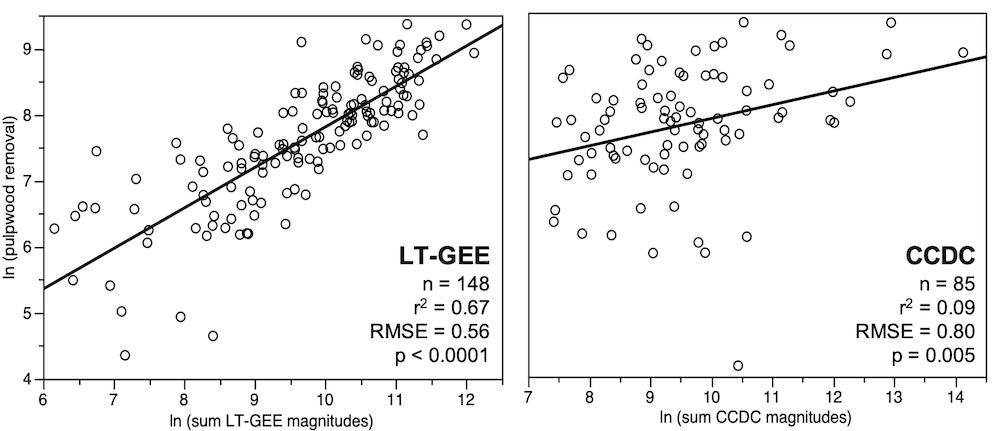

Change detection algorithms under-perform in the Northern Forest, but we can do better.

Madeleine Desrochers 1, 
@MadsDesrochers
mldesroc@syr.edu
Wayne Trip2,
Stephen Logan2
Eddie Bevilaqua1,
Lucas Johnson3,
Colin M. Beier1,
1 Department of Sustainable Resources Management, State University of New York College of Environmental Science and Forestry (SUNY ESF)
2 F & W Forestry LLC
3 Graduate Program in Environmental Science, SUNY ESF
Introduction
Landscape scale forest monitoring tools are an essential part of the process of growing and sustaining forests as a natural climate solution. Regulatory measures and emissions markets, like forest certification programs, require monitoring and verification to ensure landowner compliance over time. Additionally, forest disturbance regimes in the Northern Forest are expected to shift and intensify due to insect pest outbreaks and extreme weather events. Therefore, there is an urgent need to create efficient and accurate monitoring tools that can provide timely and actionable information on how and where disturbance is taking place, both to understand its effects on forest ecosystem structure, functions, and services (including climate benefits) and to inform stewardship actions in response.
Change detection algorithms based on satellite imagery can address this need but are largely untested for the forest types, disturbance regimes, and management practices of the US Northeast. Because of the role these types of tools will play in modern forest management, it is essential that these tools be designed with forests, forestry professionals and landowners in mind.
Methods
Harvest records from 43,000 hectares of working forests in the Adirondack Park region were compared to outputs from three of the most commonly implemented disturbance detection algorithms - Continuous Change Detection and Classification (CCDC), Landtrendr (LT-GEE), and Landscape Change Monitoring System (LCMS) - using a raster based GIS overlay analysis. The overall accuracy of each algorithm was calculated, as well each algorithms accuracy at detecting common harvest prescriptions. Finally, for the algorithms that provided estimates of disturbance magnitude, those estimates were used to model the pulpwood removals from each harvest.

Figure 1. Maps showing date of most reccent disturbance for subset of study area. Inset map next to legend shows examples of parcel boundaries, harvest units and a two-lane highway (NYS Route 28N).

Table 1. Harvest detection performance based on a combined confusion matrix that includes results for three algorithms compared against the same harvest records.

Figure 4. Mean percentage of harvest area detected by harvest type for each algorithm. Comparison of means was done within each harvest type based on Tukey’s HSD. Error bars represent ±1 SE, and significant differences among means (P < 0.05) are indicated by different lower case letters.

Figure 5. Least squared regression analysis between disturbance magnitudes and harvest intensity. Pixel magnitudes were summed for each harvest polygon and regressed against pulpwood volumes; all data were log-transformed prior to model fitting.